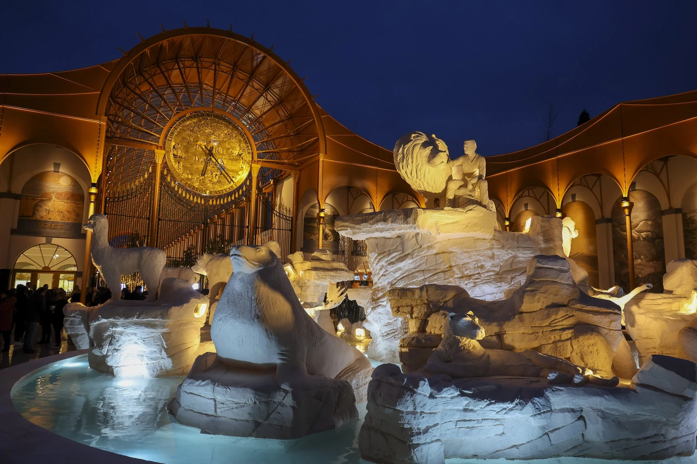
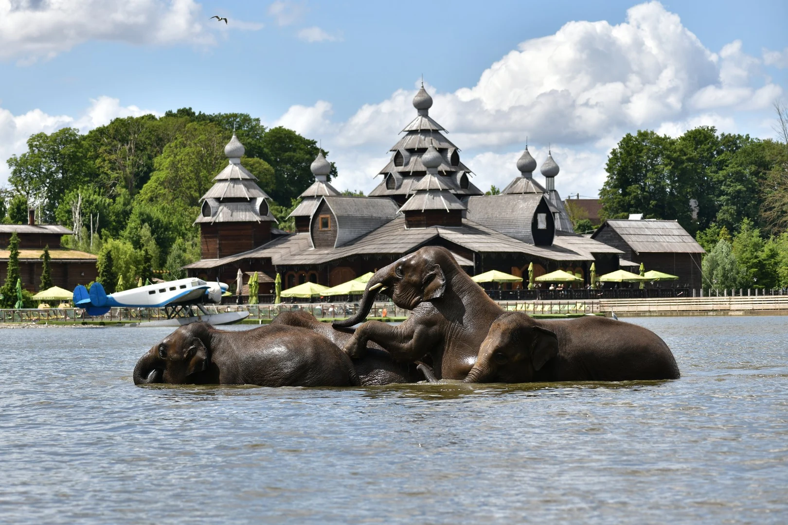
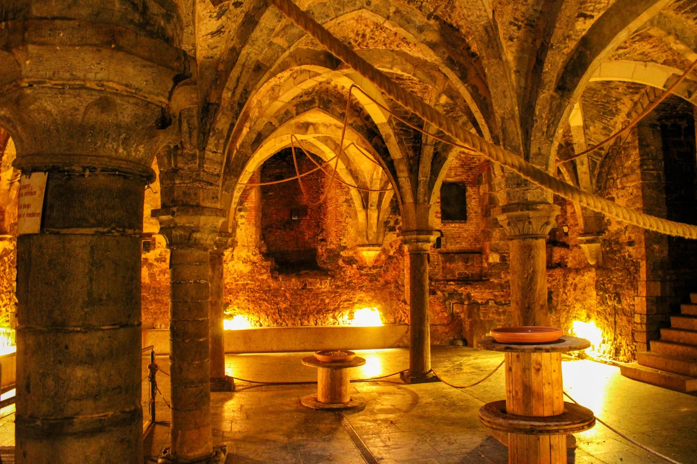
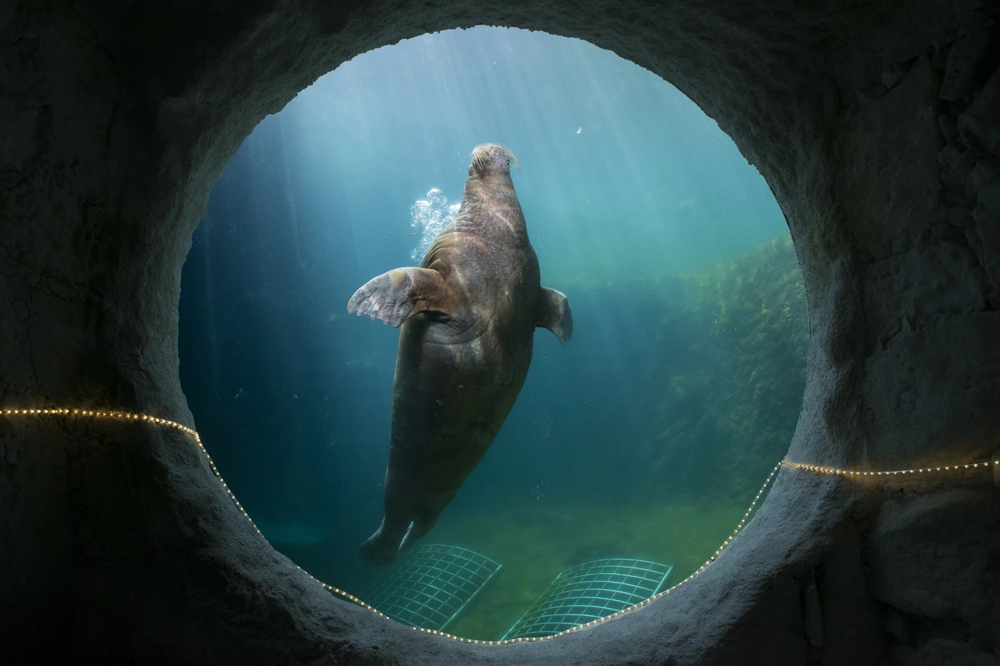
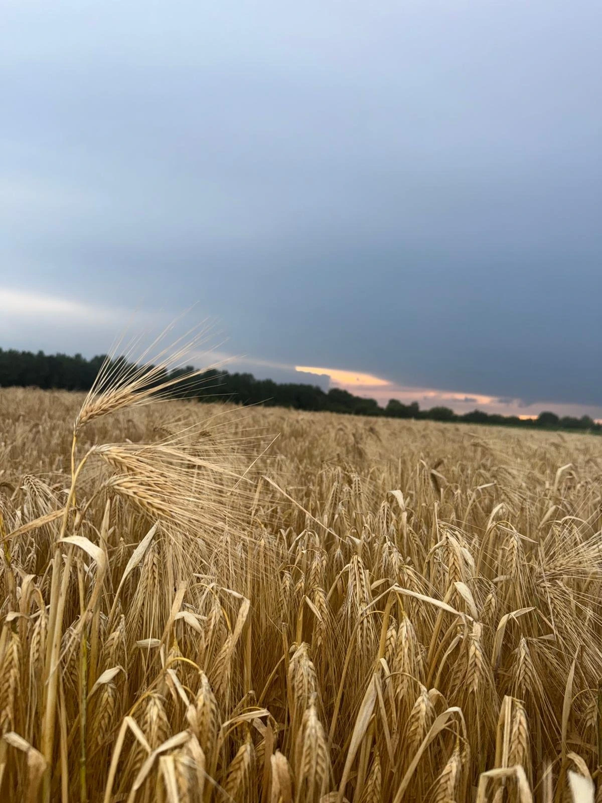
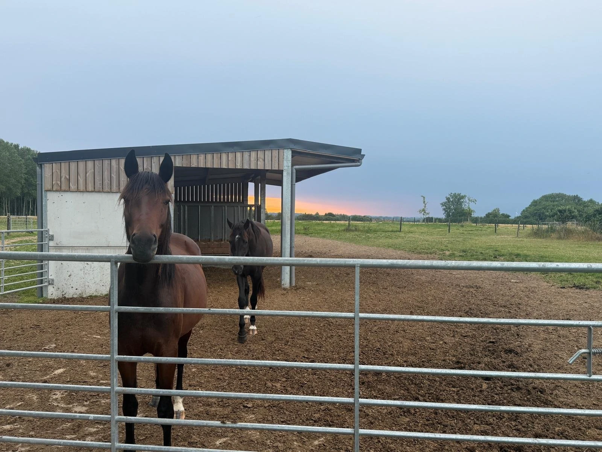
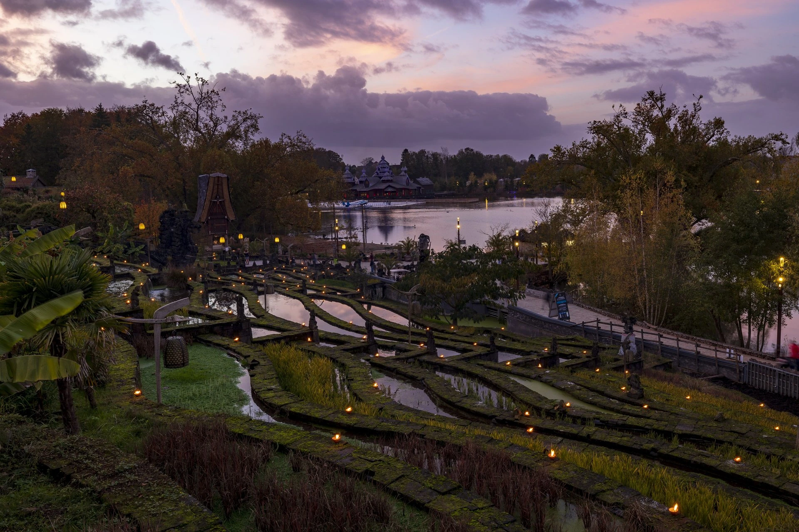

Internship journal · June – September 2026Journal de stage · juin – septembre 2026
Behind the scenesDans les coulissesof Pairi Daizade Pairi Daiza
Twelve weeks as a systems & network administrator in Belgium's leading tourist destination.Douze semaines comme administrateur systèmes & réseaux dans la première destination touristique de Belgique.
Engineering student at ESAIP, drawn to network infrastructure. For one summer I joined Pairi Daiza's IT department: keeping an information system running a few steps away from giant pandas and Siberian tigers.Étudiant ingénieur à l'ESAIP, attiré par les infrastructures réseau. Le temps d'un été, j'ai rejoint le service informatique de Pairi Daiza : faire tourner un système d'information à quelques pas des pandas géants et des tigres de Sibérie.
SchoolÉcole
ESAIP · Engineeringcycle ingénieur
RolePoste
Systems & network administratorAdministrateur systèmes & réseaux
HostEntreprise
Pairi Daiza · IT departmentservice informatique
PlaceLieu
Brugelette, Wallonia, BelgiumWallonie, Belgique
DatesDates
17 June – 11 September 202617 juin – 11 septembre 2026
The settingLe décor
A garden of worldsUn jardin des mondes
A zoological and botanical park, named Europe's best zoo by the German magazine Parkscout in 2025. Behind the temples and the enclosures: tills, card terminals, Wi-Fi, telephony and servers that have to work every single day the gates are open.Un parc zoologique et botanique, élu « meilleur zoo d'Europe » par le magazine allemand Parkscout en 2025. Derrière les temples et les enclos : des caisses, des terminaux de paiement, du Wi-Fi, de la téléphonie et des serveurs qui doivent fonctionner chaque jour d'ouverture.
80 haof park to coverde parc à couvrir
2.87 Mvisitors in 2025visiteurs en 2025
7500animals, 800 speciesanimaux, 800 espèces
12weeks on sitesemaines sur place




17 – 30 June17 – 30 juin
Chapter one · First stepsChapitre un · Premiers pas
Learning the park, one till at a timeDécouvrir le parc, une caisse à la fois
Meeting the IT team, its tools and its procedures. Then straight into the field: diagnosing and fixing tills and card terminals in the shops and restaurants, with GLPI for tickets and inventory.Découverte de l'équipe informatique, de ses outils et de ses procédures. Puis directement le terrain : diagnostic et dépannage des caisses et des terminaux de paiement dans les boutiques et les restaurants, avec GLPI pour les tickets et l'inventaire.
Support
PC-Shop
Card terminalsTPE
GLPI
JulyJuillet
Chapter two · The main missionChapitre deux · La mission principale
The whole park under Zabbix's watchTout le parc sous l'œil de Zabbix
My main mission: centralise monitoring with Zabbix 7.4. Agents deployed automatically on the Windows servers through a GPO (MSI + MST), without forced reboots, and hosts that register and sort themselves into groups thanks to their metadata.Ma mission principale : centraliser la supervision avec Zabbix 7.4. Des agents déployés automatiquement sur les serveurs Windows par GPO (MSI + MST), sans redémarrage forcé, et des hôtes qui s'enregistrent et se rangent seuls dans leurs groupes grâce à leurs métadonnées.
Zabbix 7.4
GPO
MSI + MST
Auto-registrationAuto-enregistrement
AugustAoût
Chapter three · Out in the parkChapitre trois · Sur le terrain
Wi-Fi, sound and alerts that get heardWi-Fi, son et des alertes qu'on entend
Field work across the park: diagnosing, replacing and reconfiguring the visitors' public Wi-Fi access points, and working on the sound system. Back at the desk: firewall and switches added to Zabbix, a dedicated core-network dashboard, audio and SMS alerts.Interventions dans tout le parc : diagnostic, remplacement et reconfiguration des bornes Wi-Fi publiques des visiteurs, et travail sur la sonorisation. De retour au bureau : pare-feu et switchs ajoutés à Zabbix, un tableau de bord dédié au cœur de réseau, des alertes sonores et par SMS.
Wi-Fi
SoundSonorisation
Firewall · switchesPare-feu · switchs
SMS alertsAlertes SMS
1 – 11 September1 – 11 septembre
Chapter four · Closing the loopChapitre quatre · Boucler la boucle
IP telephony, bulk scripts and a look backTéléphonie IP, scripts de masse et bilan
The 3CX IP telephony hosts brought into line: renamed in bulk with the TEL- prefix through YAML edits and scripts. The last complex field tickets closed, then time to look back on the summer.Les hôtes de téléphonie IP 3CX remis au carré : renommés en masse avec le préfixe TEL- par modification de fichiers YAML et scripts. Les derniers tickets complexes du terrain clôturés, puis l'heure du bilan.
3CX
YAML
ScriptingScripts
ReviewBilan
At a glanceEn résumé
What I worked onCe sur quoi j'ai travaillé
01
Monitoring with ZabbixSupervision avec Zabbix
Zabbix 7.4 as the single place to watch servers and network equipment: automated agent deployment, auto-registration, dashboards, audio and SMS alerts.Zabbix 7.4 comme point unique pour surveiller les serveurs et les équipements réseau : déploiement automatisé des agents, auto-enregistrement, tableaux de bord, alertes sonores et SMS.
Tills and card terminals: diagnosis and repair on site.Caisses et terminaux de paiement : diagnostic et dépannage sur place.
03
Wi-Fi & sound in the parkWi-Fi & son dans le parc
Public access points replaced and reconfigured, work on the sound system.Bornes publiques remplacées et reconfigurées, interventions sur la sonorisation.
04
GLPI
Tickets and inventory of the IT estate.Tickets et inventaire du parc informatique.
05
IP telephonyTéléphonie IP
3CX hosts managed and renamed in bulk by script.Hôtes 3CX gérés et renommés en masse par script.


Beyond the helpdeskAu-delà du helpdesk
Life in AthLa vie à Ath
A shared flat in Ath with three flatmates, and the car every morning: twenty-five minutes of Walloon countryside, between fields and horses, before diving into the tickets.Une colocation à Ath avec trois colocataires, et la voiture chaque matin : vingt-cinq minutes de campagne wallonne, entre champs et chevaux, avant de plonger dans les tickets.
These photos were taken right from the flat. Calm, green, far from open-plan offices: a clear break from the technical days.Ces photos ont été prises depuis la colocation. Calme, vert, loin des open spaces : une vraie coupure avec les journées techniques.
HousingLogement
Shared flat, AthColocation, Ath
CommuteTrajet
Ath → Brugelette · ~25 min
TakeawaysÀ retenir
Four lessons from the summerQuatre leçons de l'été
Handle the paperwork earlyGérer les démarches tôt
Student health cover, car insurance abroad, the internship agreement: sort it all out before day one.Couverture santé étudiante, assurance auto à l'étranger, convention de stage : tout régler avant le premier jour.
Truly immerse yourselfS'immerger vraiment
Make the most of working in a wildlife park. A lunch break among the pandas recharges you as much as a coffee.Profiter de travailler dans un parc animalier. Une pause déjeuner parmi les pandas recharge autant qu'un café.
Talk to the teamParler avec l'équipe
Breaks with the IT team are often where you learn the most: the undocumented fixes, the in-house habits.Les pauses avec l'équipe informatique sont souvent là où l'on apprend le plus : les correctifs non documentés, les habitudes maison.
Document as you goDocumenter au fil de l'eau
Never put off the docs. A ticket closed without a resolution note is technical debt for the whole team.Ne jamais repousser la rédaction. Un ticket fermé sans note de résolution est une dette technique pour toute l'équipe.

End of the journeyFin du voyage
Thank youMerci
Any questions about the internship?Des questions sur le stage ?